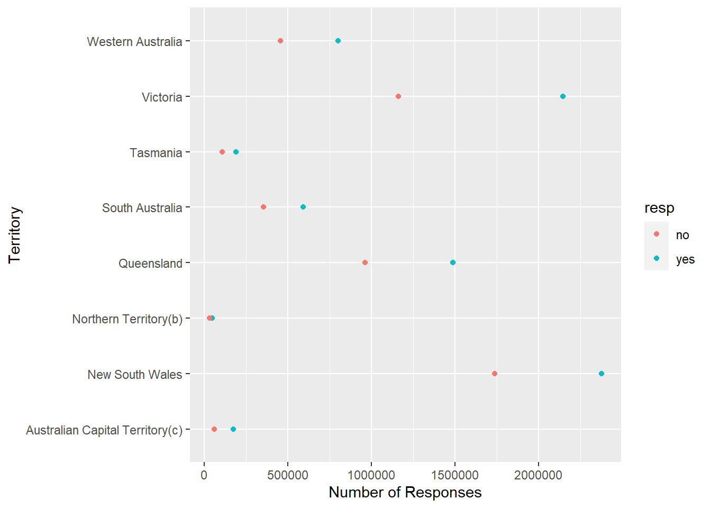

------------------------------------------------------------------------------
You have loaded plyr after dplyr - this is likely to cause problems.
If you need functions from both plyr and dplyr, please load plyr first, then dplyr:
library(plyr); library(dplyr)
------------------------------------------------------------------------------
Attaching package: 'plyr'
The following object is masked from 'package:purrr':
compact
The following objects are masked from 'package:dplyr':
arrange, count, desc, failwith, id, mutate, rename, summarise,
summarize
library(tidyr)library(scales)
Attaching package: 'scales'
The following object is masked from 'package:purrr':
discard
The following object is masked from 'package:readr':
col_factor
1) read in a data set, and describe the data set using both words and any supporting information (e.g., tables, etc)
2) tidy data (as needed, including sanity checks)
3) mutate variables as needed (including sanity checks)
4) create at least two univariate visualizations. Try to make them “publication” ready. Explain why you choose the specific graph type.
5) Create at least one bivariate visualization. Try to make them “publication” ready. Explain why you choose the specific graph type.
#This data set is a record of Australians' support or non-support of a new marriage law (don't know what it is), and the responses are organized by the state/province the respondents reside in.#I'm going to try and break the data down and show the range of "yes" votes per territory as well as that for "no".
colnames(australian_marriage_survey_responses)
[1] "territory" "resp" "count" "percent"
#These column names are pretty straightforward so I'm not going to rename them. #Update: R kept getting confused by the column "count" so I'm renaming it to "num_responses"
ggplot(australian_marriage_survey_responses, aes(x=num_responses,y=territory,color=resp)) +geom_point() +xlab("Number of Responses") +ylab("Territory")

#Above is my bivariate visual. For whatever reason it just wouldn't let me change the label for the color/fill. I can include it in the code, it just won't change it.#So above, the y-axis is the different territories respondents are from and the x-axis is the number of responses. I wanted to show (in more easily readable fashion) the number of yes and no responses to this proposed-law for each state. As you can see, the red dots are "no" and the blue are "yes." Since it'd be hard to get the exact number of "yes" and "no" responses from the points alone, I'm going to pick one territory as an example and present the values as a univariate visual.
Error: <text>:3:0: unexpected end of input
1: australian_survey_response_2 <- australian_marriage_survey_responses %>%
2: mutate(percent = num_responses/sum(num_responses)*100) %>%
^
ggplot(australian_survey_response_2, aes(fill=resp,x=territory,y=percent))+geom_bar(position ="stack",stat="identity") +ylab("Percentage of Responses") +xlab("Territory") +labs(fill="Responses") +coord_flip()
Error in ggplot(australian_survey_response_2, aes(fill = resp, x = territory, : object 'australian_survey_response_2' not found
#In order to make this graph, I first added a column, using mutate(), which converted the vote counts (for "yes" and "no") into percentages. Then I created a percentage bar graph, made the response variable the fill color(s), and stacked the percentages. This graph is useful as a quick overview of how many people voted "yes" or "no" in this postal survey, and unlike the very first graph, the figures are much more easily gathered in this format than with a point chart